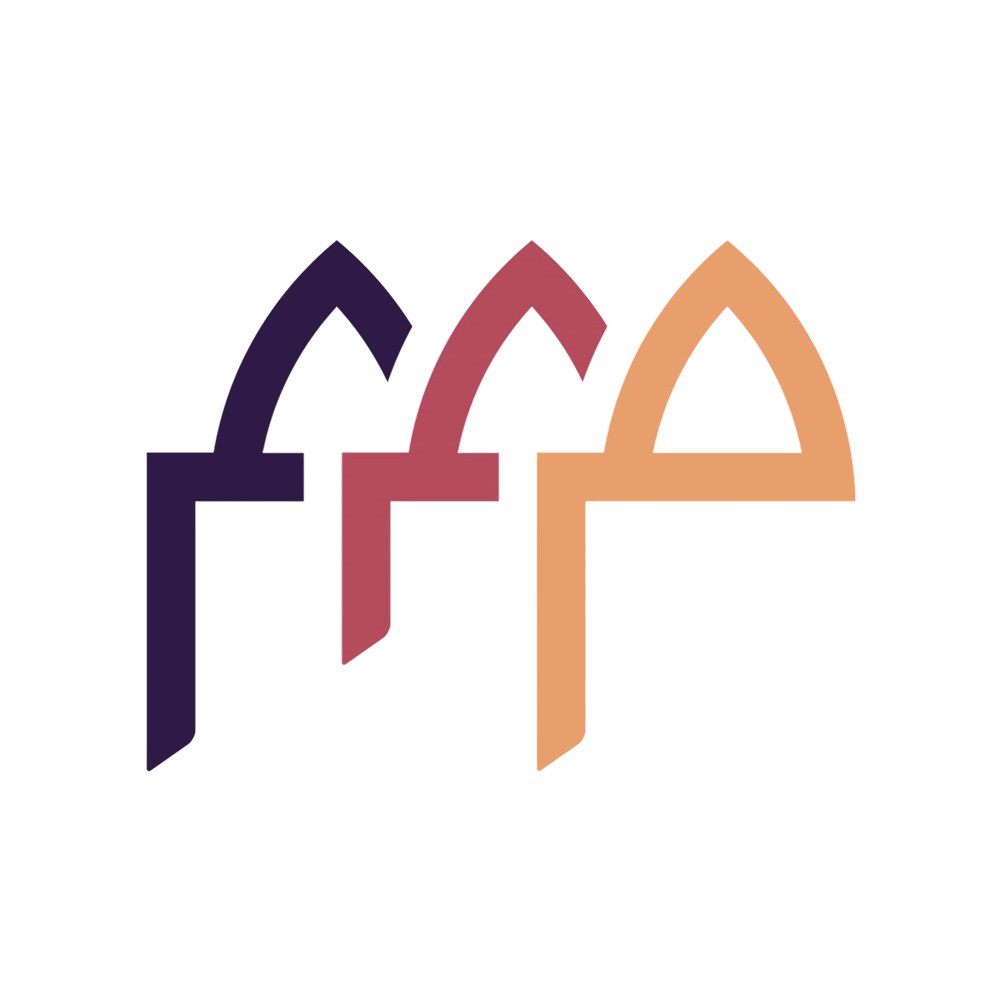

01
MinIO
S3-compatible storage for raw, refined, and curated lakehouse objects.
resolving...
MADAYNDATA LAKEHOUSE PORTALUnified runtime visibility and access for the Madayn data platform.
S3-compatible storage for raw, refined, and curated lakehouse objects.
resolving...Schedules, retries, monitors, and audits end-to-end data workflows.
resolving...Federated query engine serving open Iceberg tables to analytics clients.
resolving...Moves operational source data into governed raw storage flows.
resolving...Executes scalable cleaning, enrichment, and aggregation workloads.
resolving...Consumes certified summary datasets through the Trino ODBC interface.
DSN=Simba Trino / ODBC 64-bitDAILY / 06:00 GSTICEBERG.DEMOindustrial_energy_daily_summaryENERGYREADYtaxi_hourly_summaryTRANSPORTREADYgenre_summaryDEMOREADY